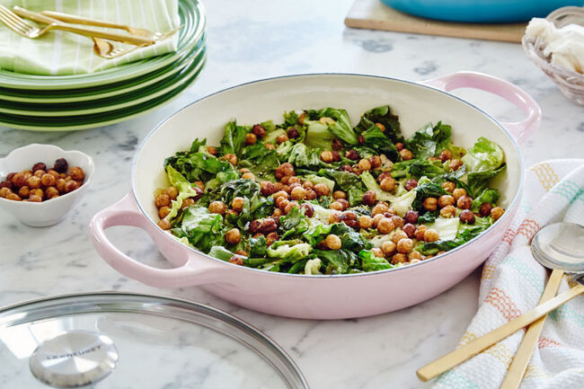

Wilted Escarole with Crispy Chickpeas

Crispy roasted chickpeas on a bed of earthy, sweet wilted escarole.
Chickpeas are a great addition to salads. Not only are they a good vegetarian protein source, but they also bump up the textural contrast in a dish. Roasted chickpeas are even better. They still have all the protein and heartiness of reguar chickpeas, but they're an irresistible salty, crunchy ingredient, especially when added to a winter green like Escarole. While raw escarole has a springy, bitter, vegetal quality, it is loaded with secret sugars, and with heat it mellows and ripens in flavor, becoming sweeter.
Ingredients
- 2 large bunches of escarole
- 1 15 ounce can chickpeas
- 1/2 teaspoon smoked paprika
- 1/2 teaspoon ground cumin
- 3 tablespoons divided, olive oil
- 4 cloves garlic, sliced thin
- 1/4 teaspoon sugar
- 1 lemon, zest and juice
- salt and freshly ground pepper, to taste
Steps
- Trim the root end of the escarole, discarding any tough outer leaves. Cut leaves crosswise into 2-inch pieces. Clean them in the sink or a large bowl full of cold water by agitating vigorously for 30 seconds. Lert sit for a few minutes to allow any grit to settle to the bottom. Lift the leaves carefully out of the water and dry in a spinner or on a clean towel.
- Drain, rinse and thoroughly dry the chickpeas on a paper towel. Season with salt, pepper, paprika and cumin.
- In a buffet casserole set over medium heat, heat 1 1/2 tablespoons of the oil. Add the seasoned chickpeas and cook until they begin to blister, stirring only once or twice, about 4-5 minutes. Remove with a slotted spoon and keep warm near the stove. Wipe out any spices left in the bottom of the pan.
- Add the remaining oil and garlic cloves to the pan. Cook until the cloves are fragrant and starting to turn golden, being careful not to burn. Add the escarole, in batches if neccessary, and stir to coat with oil. Add more oil if needed. Season with salt and pepper, cover with the glass lid and reduce heat to medium-low. Simmer until barely wilted, about 10 minutes.
- Remove the lid. Add lemon juice and sugar, stirring to combine. Taste and season again if necessary. Top with chickpeas and lemon zest.